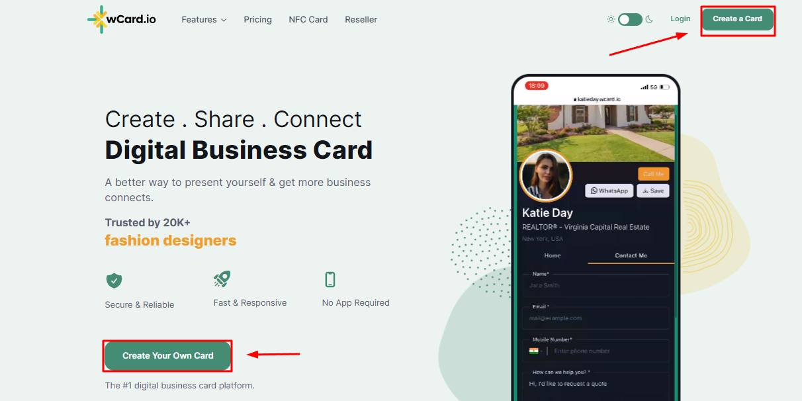
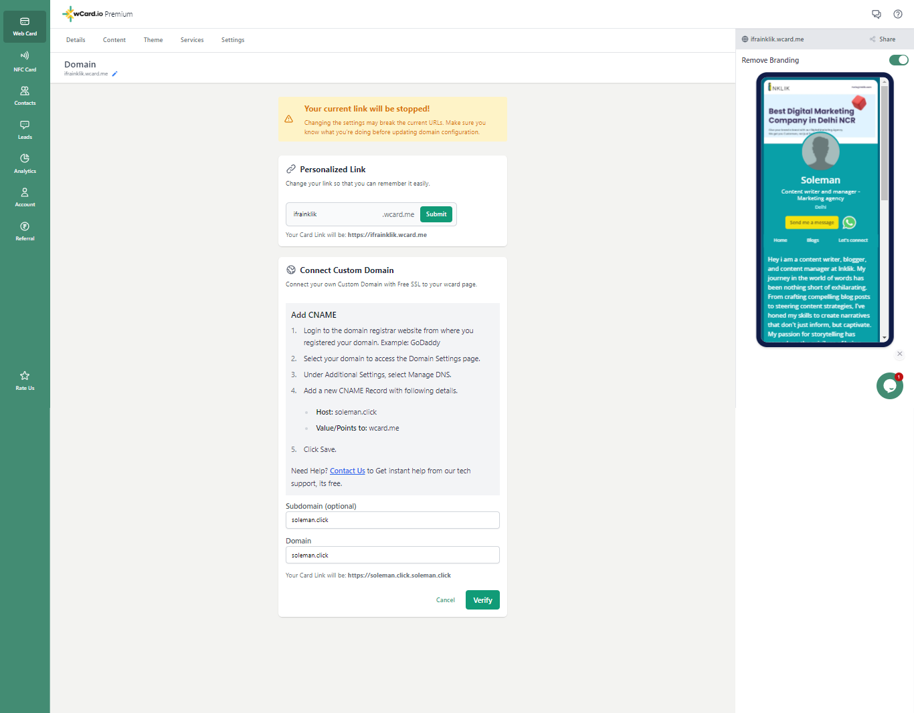

There are a lot of digital business card services in the market, but most of them force you to create a digital business card on their domain (you.somecardcompany.com). Even though you still get a digital business card, it's under someone else’s branding.
This is akin to having a visiting card that has the logo of some other company as well; would you distribute that to your contacts? The same is the case with digital business cards setup on someone else’s domain.
What would be really cool is to have your own digital business card on your own custom domain. It would be www.yourself.com or yourself.yourcompany.com. It’s only your branding all over.
So, how do you go about creating a digital business card on your own domain? wCard to your rescue. wCard lets you create a digital business card on your own domain, and the entire process is so easy that even your granny could do it!
So, here’s how you go about setting up your digital business card on your custom domain:
1. You need to have a domain:
Firstly, you need to have the domain that you want for your digital business card. In case you already have a domain, you can use that. If you don’t have one, you can buy it from any domain-providing services like Cloudflare, GoDaddy, Namecheap, etc.
2. Create an account on wCard:
So, now that you have a domain name, we have to choose the best business digital card platform to create our digital business card on our own domain. For this, we have chosen wCard. Let’s look at how you can do it with the step-by-step guide.
Go to the website of wCard.io: Open wcard.io, and it will bring you to this page.

Sign up to create your card: To create a card, click on "create a card" or "create your own card". It will open a signup popup in which you can sign up with Google/ Facebook / or your email.
.png)
Upgrade to premium: After signing up, it will take you to a page where you can choose any theme you want, and then it will ask you to upgrade to premium. Then you have to upgrade to premium to access the feature of using your domain name.
.png)
3. Connect the domain to wCard:
After making your card premium, you can now connect the domain name that you have purchased for your card. So, you can connect
A. your own custom domain
B. or a sub-domain on your own domain.
Let’s see how to do this:
A. How to connect your own custom domain:
Login to your domain registrar: Begin by visiting the website where you initially registered your domain. If you're using a service like Cloudflare, this is where you'll log in.

Navigate to DNS settings: Click on the domain name, it will take you to the dashboard of your domain name and its settings. And then you have to select “DNS” and then click on “Records”.
.png)
Setting Up CNAME Record:
Now, to direct your domain to your digital business card, you have to tell it where to connect. So, you have to add a new CNAME record. To add a record, simply click on the "Add record" button.
.png)
Fill in the Details: Configure the Record
Now, select the type “CNAME” from the drop-down list. And then add:
(i) Host @: Here's where you'll enter "@" – which stands for the root domain itself.
(ii) Add value/Points: Now comes the key part: the 'Value' or 'Target' field. Here, type in "wcard.me." and save changes
.png)
Note: If you are using Cloudflare then, do not mark the CNAME record as proxied.
And then it will appear in your records like this:
.png)
Save Your Changes: Once the record has been created you are well on your way to having your personalized domain linked to wcard.me.
You might have to wait for a while so that your domain name can get verified and authorized.
B. How to connect subdomain on your own domain
Now, if you want to make a subdomain and connect that to your digital business card then this is how you have to proceed.
Login and navigate to DNS settings: Go to your domain registrar's website and find the DNS settings. It's the same process as before. Click on Add record
.png)
Setting up CNAME record: Now to set up your custom subdomain, create a CNAME record accordingly.
For example, if you want a subdomain as “mycard”, you would setup the CNAME record as below:
Type: CNAME
Name/ host: mycard
Target: wcard.me
.png)
With this, your subdomain will automatically get created.
Save it: And then save the changes. After this, it will appear in your records list.
.png)
4. Setup your digital business card with your own domain:
Now, this is the time to connect them with your digital business card, so that anyone searching for that domain name will be able to see your digital card.
Here, you have two options:
A. You can connect your main domain: For example, from the screenshots above you can see that I have selected the domain “soleman.click” so this is my custom domain.
B. You can also connect a sub-domain on your own domain. For example, I can add a domain name like “mycard.soleman.click”.
A. Add your custom domain name in to your card
To do this you simply have to log in to your card and click on edit. Then navigate to the settings. Click on the "Change domain" option.
.png)
There you can see the option to add your custom domain to your digital business card.
After the verification, your dashboard will look like this.
.png)
B. Add your custom subdomain into your card
For this again, navigate to settings, then in domain settings, click on edit.
.png)
Then add your subdomain and click on verify.
.png)
5. Test:
Now, you can test your card by searching for your domain name. And it will take you to your digital business card.

Voila! You have a nice digital business card on your own domain. You can use this as your mini website as well. And the best part is that you do not have to worry about hosting / backups / security, etc.
If you face any issues you can always contact us, and we will help you out.
Benefits of the digital business card on your own domain
If you're curious about the importance of having a custom domain for your digital business cards and how it can benefit your personal branding, here's the answer to why everyone should go for it:
Distinctive Branding: A personalized domain (e.g., yourname.com) gives you a unique and memorable web address that reflects your brand identity. It sets you apart from the crowd and makes you more recognizable in the digital landscape. It is also easy to remember them as they are short and specific.
Professionalism: Having your own domain name makes you appear more professional and trustworthy. It shows that you have invested in your online presence and are committed to presenting yourself or your business in a serious and polished manner.
Enhanced Trust: A personalized domain builds trust with your audience. It signals that you are established and legitimate, reducing any skepticism that might arise with generic or unfamiliar subdomains.
Better SEO: Search engines tend to prioritize personalized domains in search results over subdomains. This means that having your own domain can improve your online visibility, making it easier for people to find you.
Long-Term Investment: Owning a personalized domain is a long-term investment in your online identity. It's a digital asset that you can continue to build upon as your brand or business grows.
Personalized Email Signature: We all love personalized email signatures. You can set your custom domain digital business card as your email signature, which adds a professional touch to your communication and reinforces your branding.
Final words:
Creating a digital business card with your own custom domain is a simple process that can have a big impact on your personal branding and networking efforts. By following the steps outlined above, you can easily create and customize your digital business card on wCard.io. For any queries, feel free to contact us.
FAQ of the digital business card on your own domain:
Can I change the domain anytime?
Yes, you can change your domain name anytime with the premium account.
What is better? Domain or subdomain
Having a custom domain can greatly benefit freelancers and business owners who want to enhance their personal branding and maintain a strong professional presence. You can go for subdomains if you work in any specific organization so that if anyone searches for your organization, your card might appear in search results.
Do I have to pay for the domain?
Yes, it has to be renewed yearly at your domain name provider.
Is it costly to have a digital business card on your own domain?
It is much cheaper than having a website as you do not have to worry about hosting, SSL certificates, or security issues. With wCard, you will never face downtime issues, so it will be accessible 24/7.

.jpg)